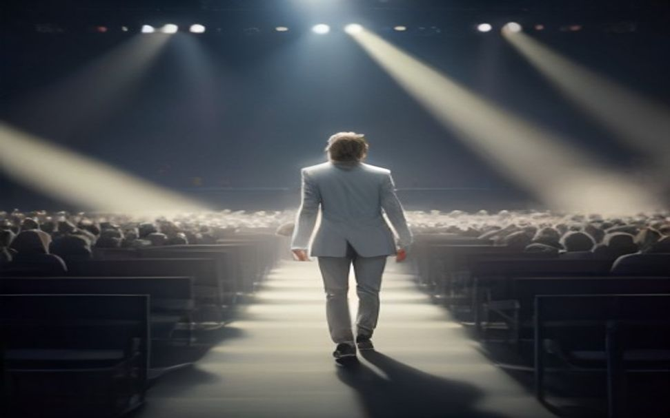
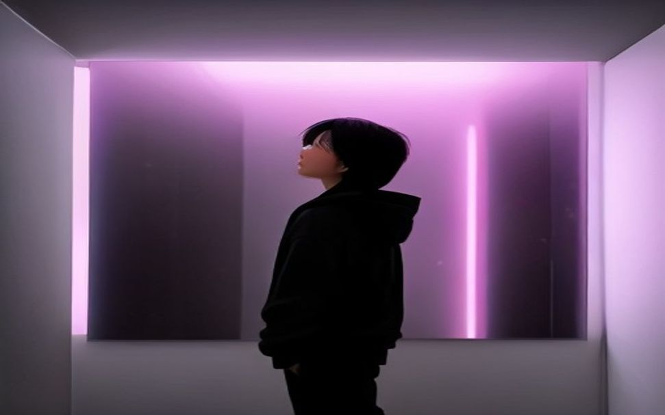
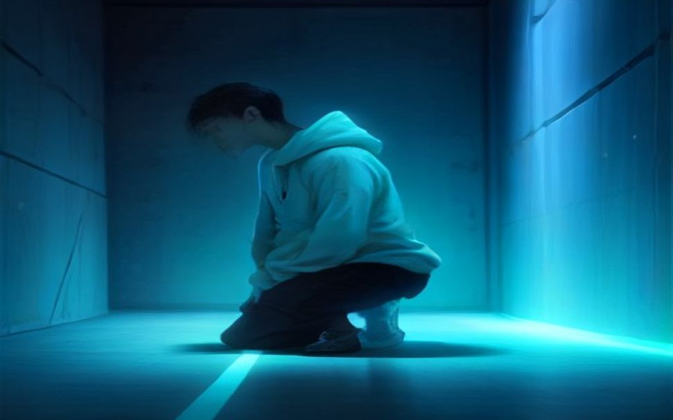
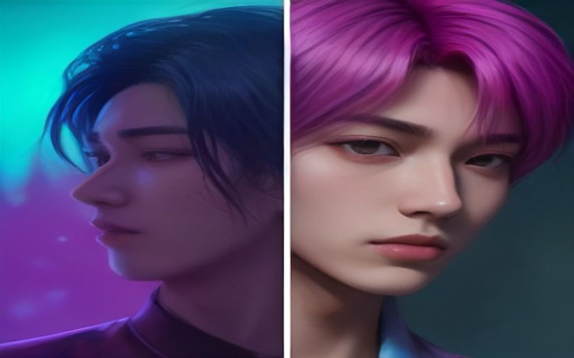
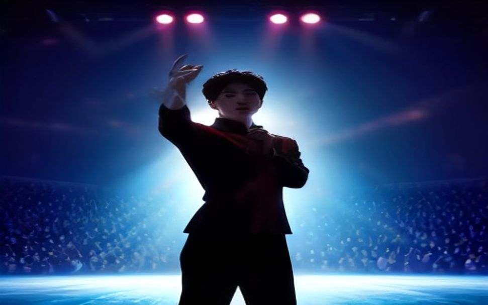

classic-bones-modern-fusion · 웹툰 조준
무대의 왕관을 삼킨 자리 — 수백 년 검증된 햄릿을 아이돌 기획사에 이식하다.
등장인물 · 뼈대 역할 매핑
EP.01 — 빈 센터

살해·찬탈. 스크린에 자막이 뜬다. 「센터 서준, 자진 탈퇴」. 식지 않은 스포트라이트 하나만 남은 텅 빈 무대 — 그 빛의 정중앙으로 도경이 걸어 들어와 선다. 처음부터 제 자리였다는 듯이. 화면 한 켠엔 또 하나의 예고가 흐른다. 「서준, 미공개 신곡 공개 예정」. 사람은 지워졌는데, 목소리는 내려간 적이 없다.

후계자 등장. 데뷔조 명단에 신인 서하의 이름이 올랐다. 텅 빈 대기실, 벽에 걸린 형의 대형 초상 아래 그는 홀로 선다. 아무도 둘이 형제인 걸 모른다 — 그래서 그는, 아무에게도 슬퍼할 수 없다.

유령의 폭로. 바닥의 폰에서 형의 목소리가 파랗게 흘러나온다 — 그러나 죽은 형이 부른 적 없는 신곡이다. 회사가 형의 목소리를 학습시킨 AI 음성 모델. 퇴출은 자진이 아니라 조작이었고, 회사는 형을 지운 뒤에도 그 목소리로 돈을 벌고 있었다.

반전 — 표적이 바뀐다. 복수의 칼끝은 도경을 향했다. 그러나 계약서를 파고들수록 드러난다 — 형을 밀어낸 것도, 도경을 그 자리에 앉힌 것도, 형의 목소리를 AI로 되살린 것도 전부 회사다. 도경은 찬탈자가 아니라 다음 차례였다. 터뜨리면 진짜 죄인은 건물 밖에 남고, 무너지는 건 무대 위 사람들뿐이다.
곁가지의 죽음. 진실을 캐던 김 매니저에게 ‘재계약 불가’가 통보된다. 짐을 싼 상자를 안고 복도 끝에서 그는 딱 한 번 돌아본다. 자기가 잘려나간다는 건, 서하가 옳다는 뜻이었다.

파국 — 복수·공멸. 컴백 생방송. 인이어에서 반주 대신 회사가 숨겨둔 형의 AI 음성이 흐른다 — 형이 직접 밝히는 조작의 진실. 전국에 송출되는 순간 카메라도 관객도, 그리고 아무것도 몰랐던 도경도 얼어붙는다. 진실은 터졌지만 무너지는 건 회사가 아니라 무대 위 전부다. 형은, 자기 목소리로 두 번 죽는다.
※ 작화는 이미지 모델로 자동 생성(src/render_art.py). 이미지가 없는 컷은 코드로 만든 벡터 장면으로 대체됩니다.
구조는 데이터로 고르고, 이야기는 모델이 쓴다.